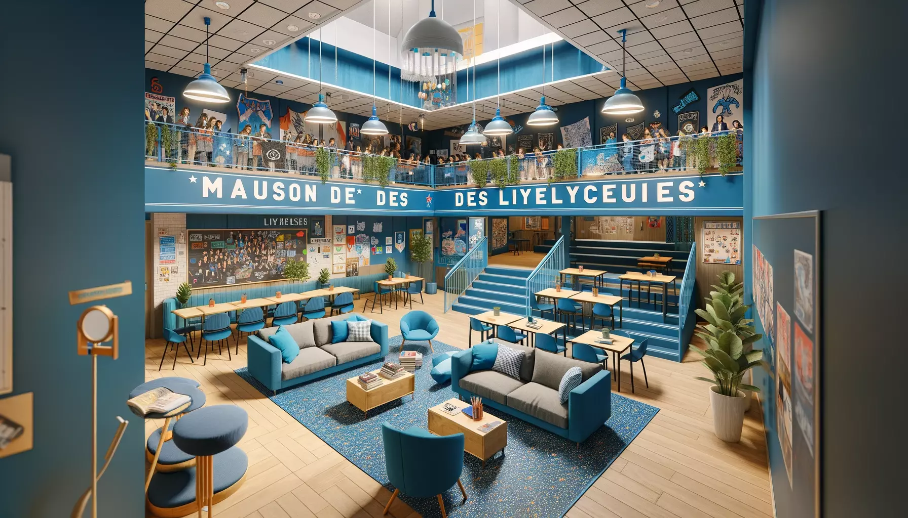

La Maison des lycéens regroupe une dizaine de clubs qui fonctionnent à merveille au sein du lycée. Son rôle ? Participer au développement de la vie sociale, culturelle et sportive dans l'établissement. Il est aussi d'accueillir et d'encadrer toutes les initiatives des élèves décidés à s'investir dans les activités de leur choix